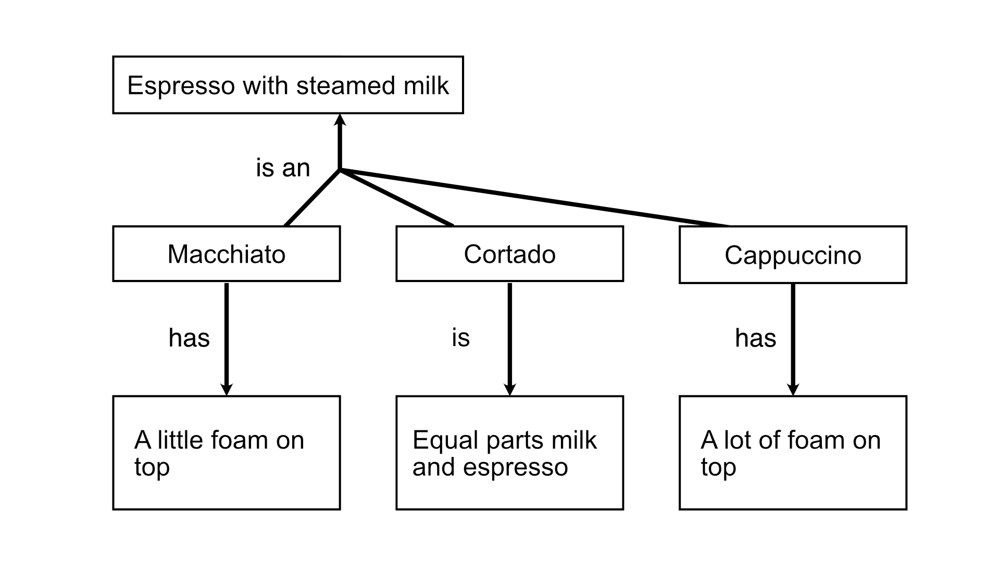

Applying Learning Science
For this assignment, I decided to search for information on acetylcholine (ACh), an organic ester of acetic acid and choline (“Acetylcholine,” n.d.). In the brain, acetylcholine acts as a neurotransmitter, regulating neurodegeneration, “synaptic function, and plasticity.” And many of the cells in a brain’s hippocampus contain receptors for ACh, implicating memory (Maurer & Williams, 2017, Section “Introduction”).
Firstly, learners should be well rested and eat a healthy diet. These requirements are not trivial, coming to the fore in underserved communities, communities with many low-income students, high-stress environments, and communities that serve the elderly. A healthy diet needs to include sources of choline.
Practically, a designer can take advantage of this insight into how the brain functions. Hasselmo (2006) interpreted the effect of ACh in the hippocampus, revealing separate processes for memory encoding and recall. And, in a focused state of mind, ACh contributed to the reduction of background stimuli (p. 712). In my view, it’s further evidence for Clark and Mayer’s redundancy and coherence principles, which reduce extraneous processing or background stimuli (Clark & Mayer, 2023). If instruction is chunked, then students should be given a calm moment in between chunks in order to promote encoding. And of course, recall should be regularly engaged using knowledge checks or short quizzes.
Applying Learning Theories
For this assignment, I worked with a partner, and we drew on a fantastic essay by Ertmer and Newby (2013), which explained the influences of Behaviorism, Cognitivism, and Constructivism on instructional design. Ertmer and Newby ensured that learning scenarios were successful by utilizing evidence-based learning strategies. Following their example, Diego and Noah proposed that the following learning strategies would aid our work.
- Active participation
- Chunking instructional content
- Designing for cognitive load
- Relating instruction to an authentic context
Part of Noah’s capstone project will provide instruction on concept mapping to graduate students who attend CSUMB. Diego’s project will provide instruction on espresso techniques to new baristas onboarding to work at a coffee shop. Both our projects will teach adults who have demonstrated relevant skills, yet they might not know the topic covered in the course. By following certain learning strategies, we can ensure that our projects are effective.

All three major learning theories support chunking. In our projects, lessons will be chunked and follow an appropriate sequence, from simple to more complicated. Thinking from a Constructivist perspective, we both decided to give learners opportunities to reflect on different steps in the instructional sequence. The events of each step will be discussed with peers, grounding new procedural knowledge in the community. In Diego’s project, baristas will be able to apply the knowledge through a hands-on environment, which will build new knowledge based on the existing mental framework.
A Behaviorist perspective is useful while teaching declarative knowledge. In both of our projects, new terms will be used to identify examples and non-examples. Learners will practice with these terms during quizzes or knowledge checks. These knowledge checks will provide immediate feedback and thus follow from the behaviorist notion of operant conditioning. Also, this behaviorist approach is useful for barista training because its methods are observational. They emphasize scientific precision, which is essential for crafting espresso drinks and developing new recipes.
Diego and Noah agreed that graphics, like Figure 1, could be added to text-based materials throughout their projects. For example, concept maps prompt the active processing of instructional material, requiring students to translate or reconcile text with corresponding graphics. These mental processes are called germane load and considered to be part of the productive struggle that makes learning stick (Clark & Mayer, 2023, Chap. 4).
References
Acetylcholine. (n.d.). In Wikipedia. Retrieved November 3, 2026, from https://en.wikipedia.org/wiki/Acetylcholine
Clark, R. & Mayer, E. R. (2023). E-Learning and The Science of Instruction (5th ed.). Wiley.
Ertmer, P. A., & Newby, T. J. (2013). Behaviorism, cognitivism, constructivism: Comparing critical features from an instructional design perspective. Performance Improvement Quarterly, 26(2), 43-71. (Original work published 1993)
Maurer, S. V., & Williams, C. L. (2017). The Cholinergic System Modulates Memory and Hippocampal Plasticity via Its Interactions with Non-Neuronal Cells. Frontiers in immunology, 8, 1489. https://doi.org/10.3389/fimmu.2017.01489
Hasselmo, M. E. (2006). The role of acetylcholine in learning and memory. Current Opinion in Neurobiology, 16(6), 710–715. https://doi-org.csumb.idm.oclc.org/10.1016/j.conb.2006.09.002